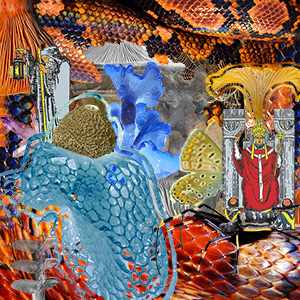
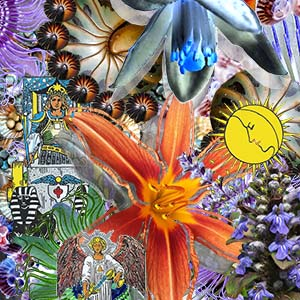
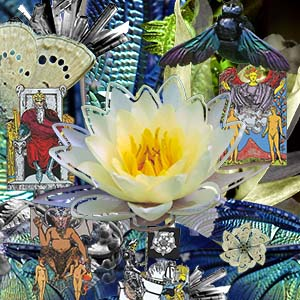

Index
Biograpy
Portfolio
Photoshop Challenge



Mind Body & Spirit Collage
The Mind, Body, and Spirit collage was an assigned project where we were asked to create a triptych depicting our minds (intellect), bodies (physical being), and spirit (motivations). We were to use images from the internet to create representations of ourselves in a non-destructive photo-editing application such as Photoshop.
I struggled the most with the ideation phase of this project because the three prompts lead me in many directions. The more I brainstormed and thought about who I am mentally, physically, and spiritually, however, I began to see a theme throughout the words I was coming up with nature and how it has played a role in shaping my identity. Another theme throughout my collages is using Tarot imagery to depict a variety of meanings, having specific cards correlate to each collage.
Although this medium is new to me, this body of work fits in with my previous work, dealing with similar concepts of identity through botanicals. My work before now has been primarily in metals, enameling, and fibers but through Photoshop in this project, I was able to create a series of collages that reflects my artistic background through textures and detail, while still moving forward as an artist.
Check out the process book for my collages here: